AI Demystified
Richard Flamsholt
August 2026

Over time, some landmark tech has particularly triggered my brain.
Back when HTML and XML came out I was like, man, I just want to know all about it.
Same with Java and .NET, with their intriguing bytecode and VM-engines.
For the past year I've felt that way about AI. And I think we're all filled with emotions about AI. It's so exciting and promising, but also mysterious. There's this feeling that "it can do anything if I only hold it right". that can lead to FOMO, fear of holding it wrong, disappointment in the AI or yourself if it doesn't work as well as imagined.

Many lightbulb-moments have given me a better fundamental understanding of AI and how to best use it. The context, cost, limitations. It has demystified the AI and I wish for other to have that insight too.

Let's begin far removed from any AI: a nice freshly baked bread.
You can bake lovely, soft, crunchy bread without knowing what "yeast" actually is or what it does. "Add yeast, then set the clock to let the dough rise for one hour", as the recipe says. The bread comes out fine. Usually.

But how does yeast cause the dough to "rise"? And should it be placed somewhere warm? But not too warm?

Some even say "put the dough in the fridge". It can seem a bit mysterious.

Now, if you know that yeast is a living organism that cause fermentation by using enzymes to feed on sugar in the flour, then the whole thing can become quite demystifed. Still complex, sure, but you can now understand how the choice of flour, additives, and temperature over time affect the dough. And understand how you can make deliberate choices to "steer" the dough better.
For example a "cold ferment": let the yeast work normally for an hour and then place the dough in the fridge to put the yeast to sleep while the enzymes continue to work on building flavor and gluten. A lot of advanced baking processes can seem arbitrary or magical ("add diastatic malt powder to ...") but armed with a fundamental understanding of the way yeast and enzymes works you're much better equipped to understand them - and steer them your own way, too.

This presentation is about the yeast and enzymes of AI. And frankly, it's about all of the AI.

Let me say this up front: will that knowledge turn you into an expert baker overnight? Maybe not. But it will help you reason about the underlying mecahnisms, the fundamental behavior and limitations of the AI. Personally I have found that really, really useful.

It's my hope and goal that this presentation will help you rise (haha) to become much more confident in your use of AI.
"Just the basics"

This may well has been the most challenging presentation I've ever put together.
Because it's not some fringe topic, like for example Quantum Computing, where I can shine or dazzle you and you frankly wouldn't have much use of it anyway. On the contrary: everybody is interested in AI and everybody's using AI and I should most certainly strive to give insights that is truly useful. That, I decided, would be the fundamentals: the LLM and AI-service itself, the core understanding that is still relevant in a year. Just those parts. Just keep it simple, I thought.

"Simple", yeah right. Each little bit is a rabbit hole worthy of an entire presentation.

This is the path we'll take:
We'll start with the technical parts. How does the AI work? What can it do? In particular explore the LLM deeply because it is the most fundamental part of all. That will be the hardest part - just saying.
With that in place we'll see how to use the AI. How to tame the context. A look at guidance and myths.. At the end there's a surprise.
10,000,000 videos + 1

Why am I telling you this? What can I possibly say that hasn't already been said in the 10,000,000 existing AI-related videos? Why not just give you 10 links to the most popular videos about LLMs?
In my opinion for same reason that you ask an AI about any topic instead of reading some of the 10,000,000 webpages about that topic: you get a personal, curated presentation that tells the story in a way I find insightful - hopefully presenting just the good bits from those 10,000,000 videos. Also, you can ask any questions you have.

About that: if you're thinking "hang on, that can't be right" or "I don't get it!" then feel free to raise your hand and ask questions.
Afterwards go revisit the slides at your own pace. They are on github and has lots of links to related materials.
And ask me or other colleagues if you've got questions. I'd be happy to elaborate on everything I'm presenting here today.

Final words: I've strived to make the presentation deep and useful but also entertaining and surprising. Be prepared to stay alert, because there's a lot to cover in only one hour so we'll move really fast.

You, the human, use an AI Agent to communicate with an AI Service that turn your messages into tokens and feed it through an LLM. The service and agent can use tools and the client can remember.
This is what we'll cover.
I've already said "the AI" many times. Let's be clear: in this presentation I am talking about AI that generates text, like Claude, ChatGPT, Gemini, Grok, etc. They all use an LLM, a Large Language Model AI, and their principles and capabilities are very similar, broadly speaking.
So AI here means generative text AI. Not AI for generating images using stable diffusion, not AI for self-driving cars, not AI for folding proteins.
Understand AI in 14 minutes – with Anthropic's Chloe Lubinski [ARC 2026]
The LLM
Large Language Model

The LLM is the brain

The LLM is the only part that thinks.
"Please tell me: what is an LLM?"

The LLM only does math on numbers

Tokens and embeddings
Tokens

Tokens goes in, tokens comes out

A token is
- A token is practically a word, like "hello"
- It is the chunk of text the LLM works on
- Therefore what you ultimately pay for
In gpt-4o, "hello" is token number 24912

AI models have specific token vocabularies.
ChatGPT 3.5's token vocabulary

- ChatGPT’s entire vocabulary https://emaggiori.com/chatgpt-vocabulary/
"hello"

Tokenizers:
"hello world"

"hello" in the vocabulary

Notice that "hello" in the gpt-4o tokenizer is #24912 and in the ChatGPT vocabulary it's 15339. Vocabularies change from model to model. The concrete numbers doesn't matter outside of the AI service so you shouldn't rely on them.
"h e l l o w o r l d"

This shows one advantage of the tokenization: simply fewer tokens than if everything was spelled out.
"hello world from ..."

The first four words are common and have each their own token, but much to my disappointment it seems "Flamsholt" isn't worthy of getting its own token so it's made up of 3 parts.
Token for "Flam" is 97957

Look' there's "Flam", in dubious company of inflammatory tokens.
Save space and identifies "word-features"

Another advantage of tokenization is that it allow identifying common linguistic "traits", such as "ization" which is about "doing/producing something". Works for other languages too.
A danish elevator "in motion"

Another advantage of tokenization is that it allow identifying common linguistic "traits", such as "ization" which is about "doing/producing something". Works for other languages too.
I fart poetry

Another advantage of tokenization is that it allow identifying common linguistic "traits", such as "ization" which is about "doing/producing something". Works for other languages too.
Same text, same token - always

Examples in English, Danish, Korean, Classical Chinese, and C#.
English dominates, by sheer volume

Examples in English, Danish, Korean, Classical Chinese, and C#.
TODO:
Fun category — Danish/English false friends. Here are 10 good ones:
Gift — dansk: gift (married) eller gift (poison); engelsk: en gave Barn — dansk: et barn (child); engelsk: en lade Sky — dansk: en sky (cloud, eller sovs-sky); engelsk: himlen Slut — dansk: slut (the end); engelsk: … noget helt andet Kind — dansk: en kind (cheek); engelsk: venlig Tag — dansk: et tag (roof); engelsk: et mærke/en etiket Dog — dansk: dog (however); engelsk: en hund Gal — dansk: gal (crazy); engelsk: slang for en pige Bog — dansk: en bog (book); engelsk: en mose Stole — dansk: stole (chairs, eller at stole på); engelsk: datid af "steal"
Bonus: and (duck), men (but), og sand — som på dansk både betyder sand og true, så den er en dobbelt false friend.
Revisit the example

Tokens, summarized

- A token is the chunk of text the LLM reason about
- Models typically have a vocabulary of 200,000 tokens
- For English, 1 token is roughly 1 word (3/4 of a word)
- Tokens are not language specific, just snippets of text
Last, but not least: - Ultimately, cost is directly related to number of tokens
For English, one token generally corresponds to about 4 characters. For a text the number of tokens will typically be 30% higher than the number of words, ie 1000 words means 1300 tokens - broadly speaking.
Embeddings

An embedding embodies the meaning (characteristica, features, traits, ...) of something, anything
In everyday English "embedding" sounds like something you do: the act of placing something into something else.
In AI, it means a concrete vector of numbers that somehow represent the characteristics of something. It's a noun, not a verb. It's a "thing", not something that "happens".
Stay with me
TODO: maybe another or no image

You probably knew about tokens. Embeddings are the "live" counterpart to tokens, and they are incredibly valuable to grasp the meaning of. It may feel abstract and complex so sit tight.
Specialty Coffee Association (SCA)

Spotify's 80-dimensional characteristics

Spotify really does characterize music using 80 dimensions.
Imagine capturing the essense of ... anything

An embedding is a token's characteristics
<img src="images/llm/embeddings/20d-kitten.png" />
An embedding is a list of numbers (also called a vector or tensor) that somehow characterises something. Sometimes called "features", as each value in the vector encodes some semantic trait of the token.
The number of nuances, characteristics, we decide to use is called the embedding's dimension. If we choose 20 characteristics then the embedding of "kitten" has 20 dimensions.
Each number is called the weight of that dimension.
Embeddings can be: Any word you know. Any sentence there exist. Any feeling you can have. Any concept, including e.g. a curious yet mildly confused audience.
More of "anything imaginable"
- The concept of the number 7
- Loneliness in a crowded place
- The entire first Harry Potter book
- A single chess position mid-game
- The smell of rain on hot asphalt
- A user's purchases on a website
- A protein's amino acid sequence
- The grammatical role "indirect object"
- The concept of sarcasm (yeah, right)
- What "London-ness" feels like
- A function's behavior in a codebase
- A legal precedent in criminal law
- The notion of "almost, but not quite"
- What 3 a.m. feels like
Every token has an embedding-vector

ChatGPT 3 has 50257 tokens, each described by a 12288-dimensional embedding
The example's embeddings

Each of these lists of 12288 numbers represent the core meaning of that single token. The meaning of "Please", the meaning of "tell", the meaning of "me", and so on.
So what we have here is a set of numbers that essentially represents the full meaning of the entire context.
The weights are constructed during the LLM's training. Right now just accept that those 12288 numbers do in fact characterise all aspects of one single token. We'll cover how they've come to be later.
An embedding is a "direction" in a hyper-dimensional space of everything that exists

One way to think about an embedding is as a "direction", an "arrow", in a hyper-dimensional space of every conceivable and inconceivable concept. Because that is, in fact, what it is. And it leads to some astounding and surprising behaviors.
Also known as the latent space.
Similar "meanings" are similar "directions"

The big surprise to everybody:
We can "do math" on language

Example: Two embeddings, man and woman

Uncle and aunt

Nephew and niece

King and queen

There's a "gender direction"

Since an embedding is a direction in this hyper-dimensional space, this kind of "gender-direction" is of course in itself also an embedding. We have identified the embedding of the concept "the feminine version of something".
The direction for "sadness"

The direction for "whimsical"

The direction for "rainbow"

The direction for "spatula"

Germany-Italy

Germany-Japan

Takeaway about embeddings
- You can compare embeddings to figure out how similar the meanings they represent are.
For instance, find a synonym by simply finding the closest embeddings to a word
- Embeddings are "meanings" and that meaning can be transformed with math
- An embedding is just some numbers. Cheap to store in a database and work on.
- (Covered later) The embeddings relates to a concrete model and are created during the training of that specific model; their numbers only make sense to that model
An embedding: any meaning, as numbers

To hammer it home: An embedding can be anything imaginable, not just a word. There's surely a 12228-dimensional set of numbers that represent "the hopeful feeling that the audience grasp a complex issue you explain".
Frankly we simply don't know what the dimensions or numbers mean. They don't map crisply to existing human concepts but only makes mathematical sense. Dimension number 7 of "Please" might contribute a little to politeness, a little to interactivity, a little to something related to food, and a little to some abstract concept that doesn't map to any word in English.
There's a research field called mechanistic interpretability that tries to decompose these representations into interpretable directions. They can extract interpretable features, but understanding how features compose to produce behavior is still largely unsolved.
- Scaling Monosemanticity and Feature Steering
- Emotion concepts and their function in a large language model
- How might LLMs store facts | Deep Learning Chapter 7 (3Blue1Brown)
The LLM does "math on embeddings"
It relies on what we just covered: on a very large scale, we can do math on language.
The LLM

Putting the example through the LLM
The context is the input given to the LLM - here, 10 tokens
The context window is the longest input possible, typically 200,000-1,000,000 tokens
The LLM does inference by running the embeddings through a giant neural network

Two things to note here:
Why only An? Why not the full answer? Yeah, hold your horses just a bit longer, because: the LLM only deals with producing one next token. That's all it is concerned about: figuring out with which probablility any of the tokens is the vocabulary has for being the next token.
That's the second thing to note: the LLM itself actually just produce this set of probabilities. The mechanism that actually picks that next token is strictly speaking outside the LLM. Let's include it here to convey that the outcome eventually is a token, namely An in this case.
Large Language Models explained briefly - 3Blue1Brown
A neural network

Software that learns primarily by guessing answers and getting corrected. Trained on human language.
https://tikz.net/neural_networks/ (good images)
"The capitol of France is ..."

After billions of calculations the neural network can predict "what token likely comes next after this?"
TODO: Maybe: The neural network example
The LLM's objective: find likely next token

The very observant reader may spot something unexpected. I claimed that each token's embedding was a fixed vector. But why do the two instances of "you" then not have the same embedding-values?
That's because the transformer initially instill some positional information (1, 2, 3, ...) into each individual embedding, typically using RoPE (Rotary Position Embeddings) which "rotates" the vector in 2D spaces in each layer.
Surprisingly, changing the vector values does not remove any of the embedding's "meaning" in the high-dimensional space. It retains its core conceptual meaning, only nudged a little bit.
Probabilities for words following "you"
"That which does not kill you only makes you can" - hm, that's not right

Enter: The Transformer, in 2017

"Attention is all you need"


The 2017 paper "Attention Is All You Need" by Vaswani et al. is arguably the most consequential piece of computer science research published in the 21st century.
Today, the paper sits at over 200,000 citations, making it an absolute statistical anomaly in scientific literature.
It is the Genesis block of modern AI. Without it, there is no GPT-4, no Gemini, no Claude, no Stable Diffusion, and no AlphaFold. It transformed AI from an academic field of hyper-specialized, rigid pipelines into a unified era of generalized foundation models.
The Transformer can figure this out:

Let's begin - here's the input again
First, all embeddings "pay attention"

Every embedding gets influenced by every embedding token before it. They "absorb" the meaning of all those other embedding, influenced also by the position. The first "you" and the second "you" come from the same token, yes, but by virtue of their position they don't carry the same meaning, i.e. they don't start out as the same embedding-values, and they rub against ("pays attention to") the other tokens in different ways.
For a full 1M context-window this means that up all 1 million embeddings pays attention to every other of the 1 million embeddings before it. That's the order of a million times a million calculations.
A neural network act on it, as trained

This is where the model's built-in training shapes the meaning of the embeddings.
Focus on the strong signals

Dial up the contrast, in a way: boost the strong signals and suppress the noise.
Now do this again...

Slowly molding the meaning of that "you"

Let's do it 96 times (attention layers/heads)

175 billion small "weights" are involved

Final embedding: the desired next "meaning"

Find next token by similarity-comparison
Also known as "cosine similarity"
Score all tokens in the vocabulary (1-200,000 tokens)

The cosine similarity of 0.97 is computed in isolation — it's purely a geometric measurement between two vectors, with no knowledge of the other 199,999 tokens. The 91% is a different kind of number entirely: it's the result of a competition. Softmax takes all 2000,000 similarity scores simultaneously, exponentiates each one, and divides by their sum. Every token competes against every other token at once. "Stronger" claimed 91% of the total probability mass — not because 0.97 is intrinsically high, but because it pulled far enough ahead of the field. A high cosine similarity is the evidence. The probability is the verdict.
Choose the final output token

Let's go back to our example
The context will produce token "An"
For a full sentence: repeat until LLM says stop

58 roundtrips for 58 tokens

Tokens are really generated one by one
That's why output tokens are typically 5 x more expensive than input tokens.

This is what really boggles my mind. Each token is generated completely independently, only by choosing the most likely next word to come after what has already been seen now. There is no planning.
There's no plan to "bold" a word by emitting ** something **. Instead at one point an ** is emitted and later on another ** is emitted.
There's no planning of emitting an itemized list. At one point a 1 is emitted and then a . and that cause the likelyhood pattern-wise of a later 2 and . to occur to rise significantly. But it happens independently without any overall grand design or planning.
TODO: Not so: j-space.
J-space https://claude.ai/chat/8b6e9845-edb1-43b0-aeb5-f90d7e9650db
Cost and effort
It's one token, what could it cost?

Harry Potter ~ 100,000 tokens


Because the AI has access to the full text of book 1 in its active memory, but its underlying weights are deeply biased toward the real book 2, the resulting "original" stories are incredibly bizarre hybrids. The AI will invent a plot where Harry returns to Hogwarts, but it will subconsciously map the beats of Chamber of Secrets anyway—often renaming the Basilisk to something else but keeping the exact structural cadence of the original sequel.
100,000 context tokens in, 1 token out

How much math does one token out need?

Actually: 1,200,000,000,000 multiplications

FLOP is short for Floating-Point Operation: a multiplication of two numbers
Enter the NVidia B200 GPU
Not your Gaming Grandma's GeForce graphics card

4,500,000,000,000,000 FLOPS/sec
Pedal to the metal

1,200,000,000,000 FLOPS to produce 1 token
4,500,000,000,000,000 FLOPS/sec is B200 capacity
The output of one 4 x B200 cluster serving a Claude Opus tier model depends on the length of the context:
* 4,000 token context: 50 users at 60 tokens/sec
* 100,000 token context: 10 users at 40 tokens/sec
* 1,000,000 token context: 1 user at 15 token/sec
Ballpark cost per output token

One 4 x B200 cluster costs $500,000
- Ballpark running cost, all-included: $27/MToken out
- Claude Opus is priced at $25/MToken (June 2026)

The 4 x B200 cluster

Clusters comes as trays

Trays goes into racks

Racks goes into aisles

Now you have a datacenter

Why Graphics Cards (GPU)?
Transformer's superpower: all tokens at once

GPU: master of parallel computations

That's why Mac Mini and Mac Studio are so sought after: their GPU can use the full on-board RAM.
NVidia stock price

All chips produced by ASML, btw.
The World's Most Important Machine - Veritasium
Training
Are all AI models the same?

Admittedly I coached ChatGPT into dialing up its "chatgppt-ness" to the max before asking this question. And honestly? It worked.
Frontier Labs and Models
The big players are called Frontier Labs and their models are called Frontier Models

 ChatGPT by OpenAI
ChatGPT by OpenAI
 Gemini by Google
Gemini by Google
 Claude by Anthropic
Claude by Anthropic
 Grok by xAI (Elon Musk)
Grok by xAI (Elon Musk)
 Meta AI by Meta (Facebook)
Meta AI by Meta (Facebook)
 Vibe by Mistral AI (French)
Vibe by Mistral AI (French)
 DeepSeek by DeepSeek (Chinese)
DeepSeek by DeepSeek (Chinese)
 Perplexity is an AI Wrapper, not its own AI Service
Perplexity is an AI Wrapper, not its own AI Service
 Copilot by Microsoft is also an AI Wrapper
Copilot by Microsoft is also an AI Wrapper
How models are trained

- Base training - the "auto-complete" facts
- Alignment learning - the values
- Fine-tuning / RAG - the specialization
Pretraining is where the model learns language itself. Fed vast amounts of text, it learns to predict the next token — nothing more. The result is a powerful but raw capability: it knows how language works, how facts relate, how arguments are structured. It has no personality, no values, no sense of what a "good" response looks like.
Supervised Fine-Tuning (SFT) and Reinforcement Learning is where the model learns what good means to its creators. Humans or AI (RLHF or RLAIF) evaluators compare outputs and rank them. The model is iteratively shaped toward preferred behavior — this is where values, tone, refusal behaviors, and personality get baked in.
Pre-training on "all sentences in the world"

Putting the Large in the "Large Language Model (LLM)".
The training material is pretty commonplace for all frontier models nowadays. It perspective, it's assesed to be in the order of 1% of the content that Google crawls.
Model and embeddings are born via training
<img src="images/llm/training/training-example.png">
Backpropagation:
- Run tokens through the network like at generate
- Paths to the expected token are rewarded, others are punished
- Adjust the full network, back to the embeddings
- Causal masking trains all sub-strings, too
- Train on a gazillion texts
Finally, rather unceremoniously: this is how both the model's weights and the embeddings get their values. By training immensely to find the right balance where all training texts produce the expected next token.
It's amazing and surprising that it works.
TODO: About over-fitting, the math thingy running over the weekend
Backpropagation is ...ok, let's move on...

A trained model = embeddings + weigths

Pre-training cost
- From scratch for a new model
- it costs $200M-$1000M
- it takes 4-8 months
- From an existing model
- it costs 1-10% of full training
- it takes weeks or months
Pre-trained models are quite similar

Pre-trained answers are "auto-completions"
The pre-trained model has no real values, no persona, doesn't refuse anything.
It just predicts - statistically, mechanically, like an auto-complete.

Post-training is what shapes the model

Different personalities
ChatGPT – Structured explainer
Gemini – Diligent researcher
Claude – Honest advisor
Grok – Radical truth-seeker
Meta AI – Powerful engineer
Mistral – Efficient European
DeepSeek – Censored thinker
Post-training: reinforce the desired outcomes

Reinforcement Learning by Feedback
RLHF - Reinforcement Learning from Human Feedback (declining)
RLAIF - Reinforcement Learning from AI Feedback (growing)

Frontier labs almost universally outsource the bulk of RLHF annotation rather than hiring raters directly. The main intermediaries:
- Scale AI / Outlier — the dominant player, operating as an end-to-end data engine. Outlier handles LLM annotation, Remotasks handles visual/multimodal work. Scale is OpenAI's preferred fine-tuning partner and has also worked with Meta, Google DeepMind, and others. Taskmonk AI
- Surge AI — Anthropic's primary RLHF provider, with ~50,000 expert contractors. Also used by OpenAI and Meta. Taskmonk AI
- Invisible — shifted from executive VA services to RLHF work for labs including Microsoft, Cohere, and Mistral. Routes model outputs through trained raters who score completions and rank outputs. Sacra
Outlier alone runs a network of 700,000+ contractors globally. The work is heavily gig-economy in structure.
Pay ranges from $15/hr for generalist annotators up to $500+/hr for domain experts like medical fellows and legal professionals. Invisible charges labs $30–45/hr for annotation work while paying raters $15–20/hr.
Each major frontier AI lab spends approximately $1 billion per year on human-generated training data, according to a 2025 Time Magazine investigation.
Example: Claude's Constitution

Claude’s Constitution - Anthropic OpenAI Model Spec
Expresses Claude’s "core principles"

The model spec is the closest thing to a public constitution. It defines a priority ordering that the model should strive to follow:
- Broadly safe (supporting human oversight)
- Broadly ethical (good values, honesty)
- Adherent to Anthropic's principles
- Genuinely helpful
"Don't foster excessive engagement"

As a principle, this goes directly against the main objective of optimizing "pleasing engagement" at social platforms like Facebook.
The jailbreaking community, which is maximally adversarial and has zero loyalty to Anthropic, keeps surfacing behavior consistent with the document. When your most hostile auditors confirm the fingerprint, that’s decent evidence.
So "It just wants to please you" doesn't line up with at least Claude's stated objectives.
"New model is 36% more ..."

Model system cards - System cards document the capabilities, safety evaluations, and responsible deployment decisions for Claude models.
ChatGPT - rules over principles

ChatGPT spec example

Gemini et al - no public training guidelines

Are models different?
Yes, indeed
Same facts, different values and behaviors

- Anthropic wants Claude to reason from principles — no rulebook needed
- OpenAI wants ChatGPT to follow their spec — rules written down explicitly
- Google wants Gemini to behave correctly — but via unpublished rules
- Meta wants Llama powerful and open — open weights, few restrictions
- Mistral wants Vibe capable, open, and European — compliant, not principled
- DeepSeek wants its models helpful and harmless — as defined by the state
- xAI wants Grok to tell the truth — no censorship, no moralizing, no wokeness
Models also have variations
For example: Haikku, Sonnet, and Opus are really three different models.
They run on different hardware, LLM has different sizes, e.g. number of attention layers.

For example, the Claude family are physically three different models: different size, training, speed, cost, strengths.
A mental model for the LLM
"Once upon a ..."
"It's just a fancy autocomplete"

Saying that the LLM is "just a fancy autocomplete" is objectively 100% correct. It really is. It completes and it does so automatically. Ergo, an autocomplete.
Buf "fancy" is doing a lot of heavy lifting in that sentence. A bit like saying humans are a "fancy mix of cells".
Not "answer"; "most probable continuation"
-
You give the model a context, which is practically just a text.
-
The model can do just one thing: it has seen so much text that it can produce next-word-probabilities for any given context. Meaning, it can continue the context.
-
That means the context is everything. It is the only thing the model sees. Every word in the context nudges the model's continuation in some direction, all based on trained patterns.
-
So you don't "tell the model what to do": you give it a context so that what you want to come next becomes the model's most likely continuation.
No fact-lookup, tools, search, humans, if-then

Instead, the LLM is really pure math

The actual math

Lots of matrix operations
Think context→next, not question→answer

Words go into context with the intent of steering the next prediction toward what's useful for you. That's the whole game.
The model has no other input to go by for dealing with your tasks than the context you give it.
Predictions from seen patterns

Context determines the "likely next text"

Some "reasoning" is maybe "just a pattern"

Even math is a pattern

Not easy - human brain
That doesn't mean that it's easy to produce such a machine, or that what it does is not a great feat. It only speaks about what it actually does - how it operates, not just "at its core" but at all.
None of this means LLMs are simple to build, or that what they do isn't remarkable. It's a description of what they do — not just "at their core," but at all.
I'm not saying this is "earth shattering revelations" but I can sense that often this knowledge grounds me in a better understanding of how to shape the context.
TODO: End the LLM story
What that means
-
Patterns and nudging words will steer it in the desired direction via pattern-matching
-
Adding examples gives much better output
-
Be explicit about the output format - make it stop guessing
LLM summarized
TODO: Drawing of full context-window with "Once upon a time" -> LLM/math (lots of facts, trained behavior) -> most likely continuation
scaling laws interpretability
2019, The mainstream view was that you needed cleverer architectures, not bigger ones.
Rich Sutton's 2019 essay "The Bitter Lesson" argued that throughout AI history, generic methods that leverage compute (search, learning) have repeatedly beaten clever methods that encode human knowledge. Game playing, vision, speech — same pattern every time. Sutton's conclusion was uncomfortable: stop building in your priors, just scale.
GPT-2 (1.5B params, 2019) had produced surprisingly fluent text. But "fluent text" isn't "general capabilities." The leap to GPT-3 was ~100×
The wager was not "the loss curve will keep going" — Kaplan had already shown that. The wager was: something qualitatively useful will fall out of low enough loss. That part had no theoretical basis. GPT-2 had shown hints — coherent paragraphs, some pattern-following within a prompt — but few-shot learning as a general capability wasn't predicted by any theory.
The paper's title — "Language Models are Few-Shot Learners"
What comes after the LLM?
- A successor for LLMs is not around the corner
- There's work being done with Mix of Experts (MoE), divvying up the network
- The work continue to be N^2 for N context-length because of all the attention
- So we can't just keep cranking up the context window and the cost will likely stay somehow "per token"
So if we want to do more with the same set of tools - LLM operating on context - then the best path is: smarter ways of managing the context and those tokens.
LLM recap
- You give it a string of tokens, aka the context
- The LLM will produce a response based on the model's baked-in training by running that context through the Transformer.
- Pure math via training and reinforcement learning
And yes, LLM and context and tokens are pretty fixed. Sort of hit the ROI-ceiling for context-lengths which are O(N^2). Needs to work smarter with the context, bringing in the agent to do it and the LLM to know how. Despite eg DSpark, Mix of Experts. https://deepseek.ai/blog/inside-deepseek-dspark-lossless-inference
Takeaways
- The LLM can only reason about what's in the context
- It can't browse the web, do large math, read a file, remember anything
- Yes, the models are different - and the comes from training
There's nothing in the horison that seem to remove LLMs, context limitations and token-cost.
- Only smaller models can run well on your own hardware
- Fine-tuning is not an easy matter and typically not something you "just do"
preferences. The LLM can only reason about what's in the context.
That is all it can do. It can't browse the web, multiply two large numbers, read a file, remember anything about you, no nothing. It can only - let's repeat: run the context through the Transformer to produce a response.
It's static, constant, and fixed on the day it was completed. The weights never changes. As a user you can't make it think differently or think "harder" or learn it something new or train it or have it remember anything. It only knows what was known the day its training was concluded.
A successor tech for LLMs is not around the corner. There's work being done with "X of experts" but generally the work continue to be N^2 for N context-length because of all the attention, so 1) we can't just keep cranking up the context window (source?) and 2) the cost will likely stay somehow "per token". So if we want to do more with the same toolset (context window) then we need to explore smarter ways of managing the context and those tokens.
Called a Foundation Model because it can be used for all kinds of things without further specializing. You can fine-tune a FM but it's not all that simple - much much simpler and safer to simply give it a prompt.
When you hear somebody say "then we can just fine-tune the model" you should pack a fair amount of skepticism because you can only do that for certain models and it's not as easy as it might seem. TODO: Who would fine-tune a model?
Takeaways
It's all statistics: All the words influence each other, absorb meaning from each other.
No dictionaries, no lookup of facts, no language translations. No learning.
No strict rules. Just statistical math. This means no guarantees (actually you can't even run the same input and be guaranteed to get the same output), not enforcement, no rules. whatever text is most convincing or authoritative wins. the most probable continuation given the training distribution. It's not a battle but a likelihood contest
"no secret modes or unlock codes". No unlocking. Just. Math.
What's it good at:
Pattern recognition and analogy — "this looks like that" .
Arithmetic and counting — no calculator inside; "17 × 23" is answered by what such answers usually look like. the model answers "what does text about counting r's in strawberry usually look like?" — not "how many r's are there?"
Anything that requires understanding the content or meaning of what's in the context is the model's decision. Anything that can be evaluated against a fixed rule without understanding content is the client's. The client enforces; the model decides. And the system prompt is the interface between them — it's the client telling the model what decisions it's responsible for making, expressed in natural language because that's the only channel available, which is also why it's not a hard guarantee.
Most Important Takeaways
- The LLMs knowledge itself is fixated after training
- The LLM can only reason about what's in the context
Any questions?
I know I have some: how does it browse the web, know what today is, add two numbers, understand a pdf document?

2 hours of Andrej Karpathy building a small GPT model, fully.
Only 600 lines of Python code: 300 for train.py, 300 lines for model.py.
Let's build GPT from scratch (2 hours) Let's reproduce GPT-2 (4 hours) Github repo for nanoGPT Deep Dive into LLMs like ChatGPT
Hands-On-Large-Language-Models https://elibrary-dev.nusamandiri.ac.id/assets/fileebook/250153.pdf
The GitHub repo is incredibly thorough: They designed the entire codebase to run flawlessly for free in Google Colab (leveraging free T4 GPUs), meaning you can experiment with the tokenizers, embeddings, and RAG pipelines without paying a dime.
AI Agents

So, do you speak to the LLM?

No, you always speak via an agent

The agent knows who you are. it knows your preferences. It adds extra context to every conversation you have with the AI.
For instance what date and time it is, what your name is, your language preference, anything it knows about you from earlier chats. Also any custom instructions, like skills, that you've added to your agent.
TODO: Explain the word "agent"
The AI-service is "the AI"

The LLM (Large Language Model) is the brain of the operation. The LLM is functionally simple - for example, it actually only says one word at a time and can't "do" anything. So it needs some extra surrounding functionality be really be useful, like be able to complete a full sentence, browse the web, read documents, etc. The AI service provides that scaffolding.
You 💕 agent; the AI is completely impersonal

The parts and their many confusing names

You may be thinking: "But oh no, I'm just using Copilot in Word or chatpgt.com in my browser - not an agent".
Well, yes you are. Those are both agents. An agent is simply the tool you use to talk to the AI service with. It's a program, an app, a website, or it's an agent baked into some other app, like Outlook. The agent is also sometimes called "AI client" or "AI harness". To the AI-service it may present itself as "the assistant".
It's not an autonomous self-running James Bond-like entity. Well, except unfortunately those do exist and they're also called "agents", which is mighty confusing.
"LLM" and "AI model" are synonymous when we're talking about generative text AI; all AI models used for generating text (ChatGPT, Claude, Gemini, Grok, etc) are LLMs.
Agents comes in many shapes

Could be gemini.com, in the browser

Or could be Rovo, in Atlassian sidebar

Or Rufus, in Amazon sidebar

Siteimprove PDF remediate, in-app

Visual Studio Code, sidebar and inline

Google antigravity, in the terminal/CLI

CLI means Command Line Interface, i.e. in a text-based terminal.
Claude Desktop, dedicated app

Every agent is its own little island

Generally the only thing that the AI service knows about you is your name, identity, and account-information; your subscription plan, usage, etc.
Everything else is something that the agent provide you: your profile, memory files, skills, mcp-connectors, etc. And also the agents behavior: system prompt, tone, modes, language, etc. It all lives in the agent.
That explains why you, say, can't see skills that you've added online at claude.ai when using Claude Code in the terminal. Or even see the same skills when using Claude Code in Linux and Windows. They are simply different agents and each comes with their own capabilities and settings.
And yes, it's maybe a tad unexpected that "claude.ai" is not actually the AI service as such, but in fact just an agent just like Claude Code in the terminal is.
At least that's how it usually is today. It's likely to change over time since it's honestly a bit annoying, to say the least. It's just not an area that has gotten a lot of attention.
So now you know why the settings, like Skills, you set online at claude.ai are not available in Claude Code.
TODO: Note that this is slowly changing, more and more convergence.
Where do they live?
Frontier Models live in a datacenter

Typically, the agent is web or terminal/app

Browse to chatgpt.com, claude.com, etc: - Chats and settings are on the website - You can do a lot: chat, make images, documents, use online tools, etc

Install claude, gemini, opencode, etc: - Chats, settings, files are all on your pc - Better control over the AI - Text only, which can feel like a barrier
Claude Cowork is actually a real stand-along app that works on your local pc, just like in the terminal.
Alternatively, in apps or fully self-hosted

Use AI indirectly through apps you use: - Very little control - Chat-knowledge still comes in handy; you can maybe ask "list your tools"

Run open-weight full LLM on your pc: - Gives you full control, eg for training - Free to run, but expensive to run well
My personal AI-journey
Chat, copy-paste, embedded, now terminal

I started chatting just in the browser, of course. And I still do, by the way.
Next I started writing code with the AI, but copy-pasted the code into my code editors to compile and run it.
Then I started working with the AI inside the code editor for true cooperation. It was a relief and performance-boost to have the AI work directly on my files in my folders.
Since late 2025 I'm now exclusively coding by running the AI in a terminal and having an editor open with the files. Much bigger window to engage with the AI in, much better control.
I still use the browser chat

For anything that doesn't involve files I still just chat in the browser.
For this presentation I created a project in claude.ai for all the research. It has over 60 chats and I've prompted about 18,000 words which is about the length of Shakespeare's Macbeth. I'll leave it to the bard to comment on my efforts:
It is a tale Told by an idiot, full of sound and fury, Signifying nothing.
The AI Service

What does the AI service offer?

The full functionality is quite lean:
- It can read files you upload
- It can chat with you
- It can "think harder"
- It can use tools
- It has caching and safeguards
That's it - and remember:
It knows nothing about you personally
AI Services generally looks like this

Remember the LLM loop?
The LLM is the centerpiece

It's all about embeddings
The Transformer works on embeddings
Text maps to tokens, each with an embedding for their meaning
But ... what about files, like PDFs and images?

Files
Files are also turned into embeddings

Images

Not OCR (well, maybe some)

Images are understood in small patches

VLMs (Vision-Language Models)
- Everything visual ("claw of a predator bird") is learned from datasets of image+text
- VLMs also learn characters through that training
- Images are processed in patches (eg 16x16 pixels) to individual patch embeddings, which are then mapped into the same embedding-space as text
- Same approach for video and audio, if supported
- A hybrid approach has gained traction, using OCR for pure-text-looking images
- The end result: The model just receive embeddings, bits of "meaning". It doesn't know or care if they come from text, image patches, interpreted images, possibly OCR - it's all just embeddings to the LLM.
- Text screenshots can easily result in 10x more embeddings than raw text
You simply have a magic algorithm that can convert images into snippets og meaning, ie embeddings.
Modern Multimodal LLMs (like GPT-4o, Gemini, and Claude) generally do not use a separate, traditional OCR engine (like Tesseract or Google Vision OCR) in their standard workflow. Instead, they treat text recognition as a purely visual task.
Using a ViT, a Visual
The Vision Encoder (the Transformer "eyes") identifies patterns of lines and curves in image patches as "text-like" features. The model has been trained on millions of images of text (screenshots, menus, handwritten notes) alongside their transcriptions.It "recognizes" a letter "A" just like it recognizes a "cat" — it's simply a visual feature that triggers a specific concept in its latent space.
An ear, etc.
An image of text is typically 10x larger in context than the text would be.
Images - not likely OCR, split up into patches, each turned into an embedding, then
Whatever approach, embeddings comes out

It's really good at it now
TODO: My examples of trying to fool it
Embeddings - worth a detour

TODO: Of all the things I'm here to tell you about today (of all the takeaways from this presentation), I suspect that the usefullness and power of embeddings, not least multimodal embeddings, will be a surprise to most of you, how useful it is.
Let's recap what an embedding is: A set of numbers that captures the "meaning" of anything. So the embedding for cat and kitten are pretty similar. You can calculate the embedding of "cat" and of "kitten" and see that they're similar.
But with multimodal embeddings, aka unified embeddings, then you can calculate the embedding of "cat" and /this image/ and see that they're similar! "Is this a cat?" Yes. Of a miau or a videoclip.
And calculating the embedding of something is pretty checp. The effort is in the order of having an LLM produce one token. And then you have it and can store it somewhere and can compare it easily with others.
Just think about it: with multimodal embeddings you now have a way of comparing "anything", be it text against text, text against image, image and audio, etc. "How much does this look like that?" "Which of these 10 things looks most like that one here?". Etc.
"Unified embeddings" takes a lot of training
Unleash the power of vector search and multimodal embeddings in BigQuery
What is a Vector Database? Powering Semantic Search & AI Applications
https://blog.google/innovation-and-ai/models-and-research/gemini-models/gemini-embedding-2/
PDFs and other documents

PDFs are handled really well. The AI services gets better and better at handling documents, like eg zip-files or Word- or Excel-files.
Documents doesn't really introduce any new functionality: it is simply subjected to text and image extraction, or rendered in full and then and image recognized.
Should you convert PDFs to markdown yourself?
Depending on the AI Service, the answer can be:
Yes, no, and maybe.
It depends on the AI service - and also on the PDF, actually.
TODO: PDFs can be large and contains a lot of pdf-instructions, even binary stuff, so the belief is that passing it all to the AI Service is a tremendous overhead. TODO: screenshot of "save 95% cost by text extraction" TODO: file size vs generated text, embeddings. True, they can be big, size-wise. But what you see here is that the AI Service extracts text and images from it itself, with an eye on the structure even. It does so using plain tools like pdftoppm, pymupdf, ghostscript - page rasterization. 4llm and pdftotext. Do you really think The experiment The takeaway https://claude.ai/chat/bea3ee66-f9c1-4930-b0a6-a1fe1592685b
Big files are often not included
TODO: The LLM is fighting tooth and nail to avoid loading in full files: it will use tools (find/grep/awk) to extract info, it will search only the first part of a file, it will write a small program to do the searching.
Text, PDFs, images; all becomes embeddings
By the time the LLM goes to work, everything in the context has been converted into a big pile of embeddings, small bits of meaning.
There are no special backchannels or place for "specially important instructions".
Chatting
Feed it a context and it will produce the next expected output.
The purpose, recapped: You give it a string of tokens, aka the context, and it will produce a response based on the model's baked-in training by running that context through the Transformer. Pure math and trained knowledge.
That is all it can do. It can't browse the web, multiply two large numbers, read a file, remember anything about you, no nothing. It can only - let's repeat: run the context through the Transformer to produce a response.
Have in mind: - The LLM know only the context, nothing else
Your prompts goes into the context

A context has many parts. Here we'll focus on just the messages you send the response you get.
Everything you send - text, documents, images - is shipped as these user-messages. Binary stuff is base-64 encoded.
Let's continue the example chat

You write, the AI responds

You respond again - but now what?

Question: What is sent to the AI?

Option B: the full chat

The full chat is sent to the AI

The full chat is always, always sent to the AI

Let that sink in: every message you send, resends the full conversation.
Why? Because the LLM need the full context
The LLM can only reason about the context it is given.
It does not, it cannot, know or reason about anything else than what is in the context. The LLM is completely stateless.
You want it to know about X, beyond its trained facts? Then X must be in the context.
No links, no outside preferences, no memories, including from earlier chats:
the context is ALL the LLM can respond to.
If the answer needs thinking, the thinking happens in the context — so your job is to get the facts into the context. The model brings the reasoning; you bring the facts. It cannot supply what you didn't put there, and it will never tell you that's why it failed.
The context after 3 prompts

The context after 10 prompts

The context after 50 prompts

Total: 1+2+3+...N = O(N²) messages

It gets more and more expensive to keep on dragging the entire conversation along.
TODO: Show user/assistant turns and special tokens
"Think harder"
What could "think harder" mean?
-
Maybe the model's billions of weights can be tweaked to somehow "think better"?
Hmm, no - the LLM weights are constant numbers, frozen after training. -
So maybe thinking call on some "bigger AI", stashed away in the back room?
But then how could the biggest models think harder too? No, the hardware and model is fixed. -
Thinking could mean the LLM plan better when asked to think harder?
No wait, the transformer is pure math, acting the same way for the same input. -
Ah, now I have the full picture. Is what we do here, refining the output, thinking?
That's a bingo!
Thinking is: think, append, repeat

Chain of Thought
- Thinking is called Chain of Thought, or CoT
- Thinking also goes by other names, like effort, but always works the same way:
- Inject a special "hmm, let me think about that"-token, known from training
- Keep producing, appending, and processing thinking blocks until the LLM says "thinking completed" or the allotted thinking budget is exceeded
- The blocks are sent to the agent, which may show them to you
A penny for your thoughts
- Thinking-blocks are output tokens (and also input-tokens), so they cost you, too.
- For reasoning-heavy tasks, thinking tokens can therefore easily multiply your effective output costs by 10x.
- However, unlike AI responses or tool-results thinking-blocks are (typically) not included in the context after this turn, even though the agent's UI may still show them. Only the final response after the thinking is kept in the context for the next turns.

"Thinking blocks" can be interesting

Thinking generally produce a better result and the model can catch itself if it's going down the wrong path.
However, it can possibly also strengthen a misbelief.
Thinking typically improves the response

Without thinking-steps the LLM failed to produce a proper Haiku.
You control the thinking effort

You can enable thinking in all kinds of manners. Nowadays, it's often simply enabled by default.
"Thinking" goes by many names in the agent's UI, but they all work this same way: a loop around the LLM.
Writing "ultrathink" is a myth now

This was how Claude controlled the thinking in early days.
But not anymore.
Tools
Remember the math-example?
Using tools

"calculate 123442873893*98790237342"

You, the user, says to the AI: "please calculate 123442873893*98790237342".
The agent always send info about tools that are available. The server can also add tools that it can run. For instance, Anthropic's AI server has a linux environment with Python interpreters.
In this situation there's a tool called "code_interpreter" that claim to be able to "Executes Python code and returns the result" if you pass it a string-argument of Python-code.
LLM asks to use tool "code_interpreter"

Based on training on massive examples, the LLM decides that the best continuation from the user saying "please calculate 123442873893*98790237342" is to call a suitable tool. The "code_interpreter" seems like a suitable tool, so the LLM's output asks for a "tool_use" of that tool, passing along the parameter "print(123442873893 * 98790237342)".
The tools is being run (on agent or server)

If the tools is server-side then the server runs it. Otherwise it goes all the way back to the client. For instance, running python code or fetching a webpage is typically done by the server, but reading local files can of course only be done by the agent on the user's computer.
At any rate, the tool runs and the output is passed back into the LLM as its result.
Finally, the AI service can respond

With that information from the tool, the LLM can finally produce a nice and correct answer.
That is how the LLM go beyond the AI model
the canonical published answer is Toolformer (Schick et al. 2023), and it's worth knowing because it's mechanistically clean rather than hand-wavy. They had a base LM propose where API calls might go in ordinary text, actually executed those calls, and then kept an insertion only if having the call+result reduced the model's loss on the subsequent tokens — i.e., only if the call demonstrably helped predict what came next. Then they fine-tuned on the augmented text with the useful calls inlined. The filter is self-supervised: usefulness is defined as "did this make the future more predictable," not human judgment. Toolformer: AI learns to use APIs - AssemblyAI (5 min) Timo Schick | Toolformer: Language Models Can Teach Themselves to Use Tools (55 min)
Toolformer: Language Models Can Teach Themselves to Use Tools
The agentic loop

The LLM is in control - via tools
Practically every decision is actually conjured up by the LLM and manifested via tools:
- Calling tools
- Asking the user
- Planning vs doing
- Orchestrating agents
- Parallel vs sequential tool calls
- What to remember
- Whether to trust a result
- When to stop
-
Calling tools: Which tool, with what inputs, and whether to call several in parallel or sequentially. If two tools could both answer a question, the model picks.
-
Asking the user: When ambiguity is worth resolving vs just attempting. The model decides whether a question is clarifying or unnecessary interruption.
-
Planning vs doing: Decomposing a task into steps first, or just starting. Related: how many steps, in what order.
-
Orchestrating agents: Spawning subagents, assigning subtasks, deciding when verification by a second agent is worth the cost.
-
Parallel vs sequential tool calls: If the client supports parallel tool use, the model decides which calls are independent enough to run simultaneously vs which must wait for a prior result.
-
What to remember: If given a memory tool, the model decides what's worth storing, what to overwrite, and what to let expire. Surprisingly consequential over long sessions.
-
Whether to trust a result: After a tool returns, the model decides whether the result looks plausible or whether to sanity-check it via a second tool or its own reasoning. A search result that seems off might trigger a follow-up search.
-
When to stop: In an agentic loop, the model decides when the task is genuinely done vs when it should keep going. end_turn is its call, and getting this wrong in either direction is a real failure mode.
Why it's called an agent harness
The LLM is the raw capability; the reasoning, the judgment, the power The harness wraps around it; it constrains what the LLM can act on, and directs its outputs into a useful workflow
Example: starting background workers

The agent simply has to provide a tool, a mechanism, for running background agents. The agent isn't the one making the decision on when to actually run another background agent: it is the LLM that makes that decision.
"I did the thing" No, you didn't?
TODO: make a drawing of this Sometimes the AI will say "I did the thing", eg "I wrote the file".
But - nothing was written. Why does it lie? Stupid LLM.
Remember, the LLM just ask for the tool to be used, e.g. writing to a file. If the agent or tool fail somehow and the LLM isn't notified then the LLM merrily believes all was okay.
It seems to rarely happen anymore but when it does, then this is why.
Other implications
- It's "easy" to write an agent: just provide well-described tools that the LLM can work with
Models are trained on their own lab's tool ecosystems. When Claude runs inside Copilot, the tools Copilot hands it (names, schemas, behavioral contracts) don't match what Claude was trained on. It can generalise, but the fine-tuned judgment of when and how to use each primitive doesn't transfer perfectly. The agentic loop works the best when a model interacts with the lab's own agent.
- That's why the work done by Claude AI generally is more smoothly executed when running in Claude Code, as opposed to via e.g. Copilot, Cursor, Perplexity, and OpenCode.
The LLM can ask to use a tool
A huge part of the context is simply tools.
Not only tools for doing things, but also for how to answer and act.
MCP servers
 an MCP server is a "Standardized Wrapper" for an API.
https://gemini.google.com/app/65287c836e4e8a94?hl=da
an MCP server is a "Standardized Wrapper" for an API.
https://gemini.google.com/app/65287c836e4e8a94?hl=da
MCP is from client to some service Not Agent to Agent
Lazy Schema Loading
MCP example: github mcv vs git cli
MCP is not: A2A My JavaOne 2002 JAXP
When you see "You can add an MCP server for Confluence" you should think "I can tell the Agent that I want to use the Atlassian API".
MCP
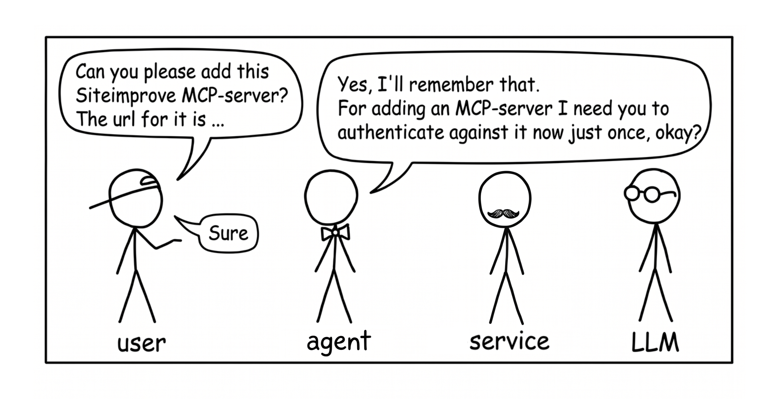
MCP
MCP

MCP

MCP
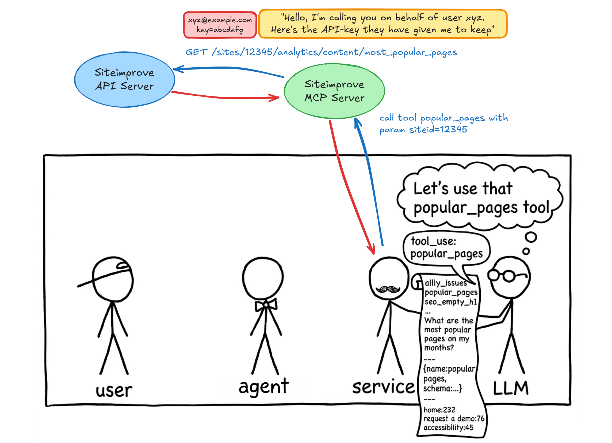
You should read this as a principled overview: the AI is talking to an MCP server which is turn call the API. The actions it is allowed to make are the actions that you are allowed to make. The MCP serveri acts on your behalf, so to speak. So it can only do what you are allowed to do. For example, for Siteimprove you can create an API-key associated with your username, and when the MCP server authenticates using that API-key then it acts as you with precisely the same kind of access you have.
MCP
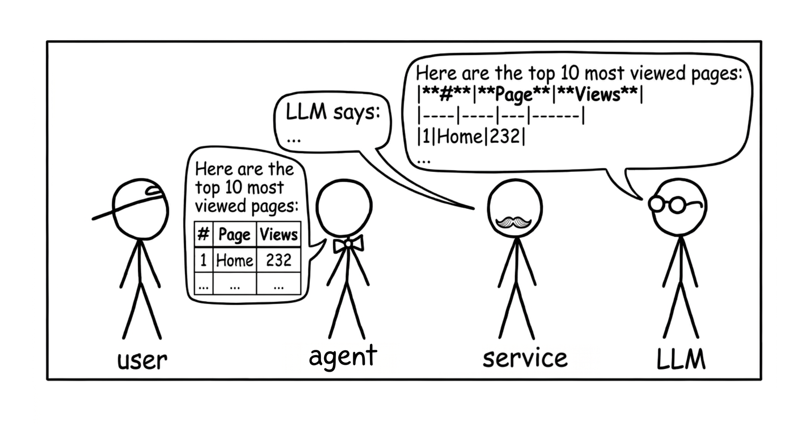
Actual example
MCP
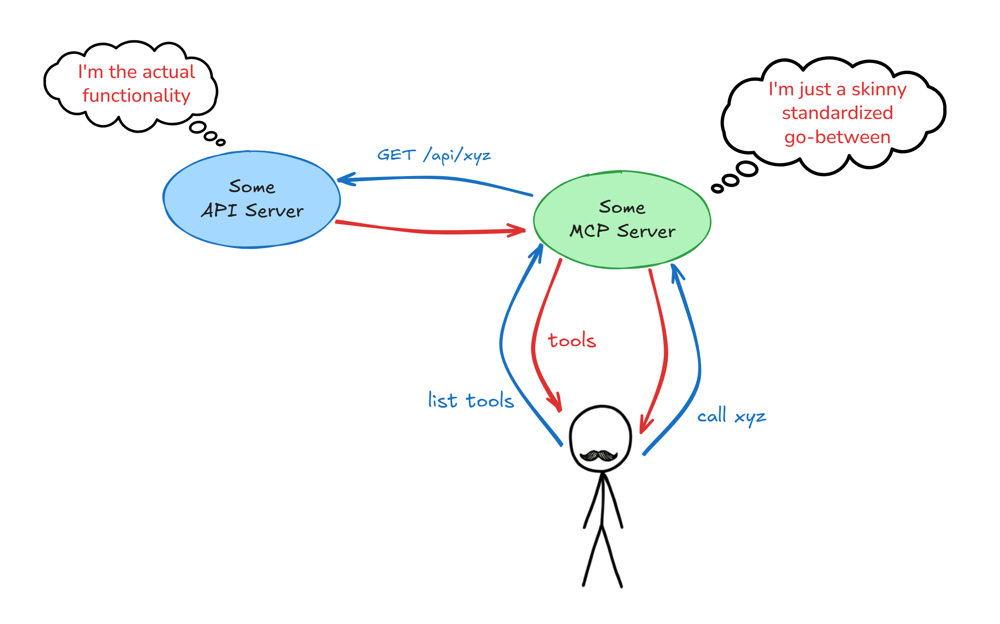
MCP example - Siteimprove
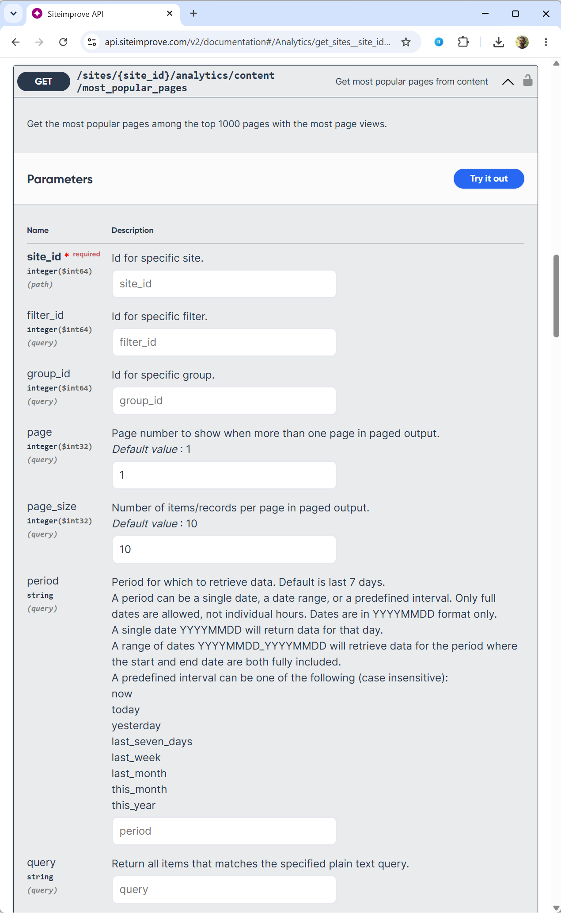
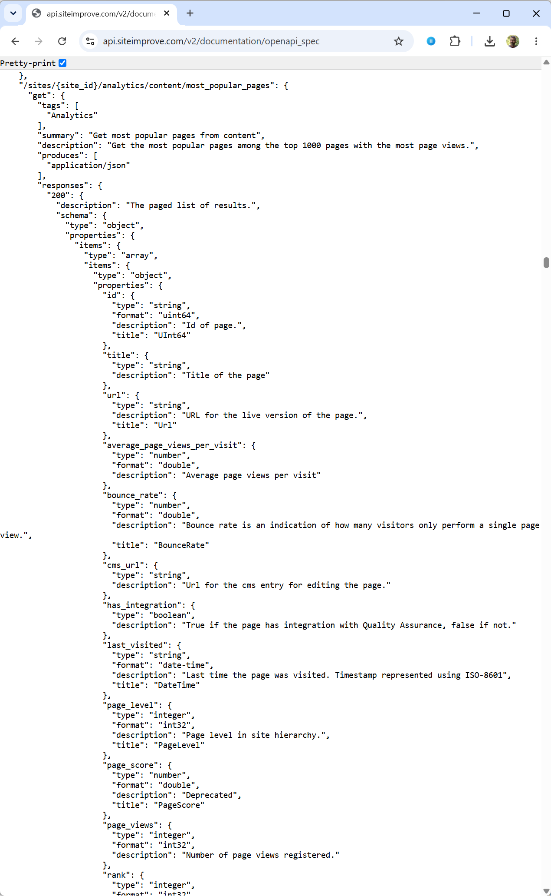
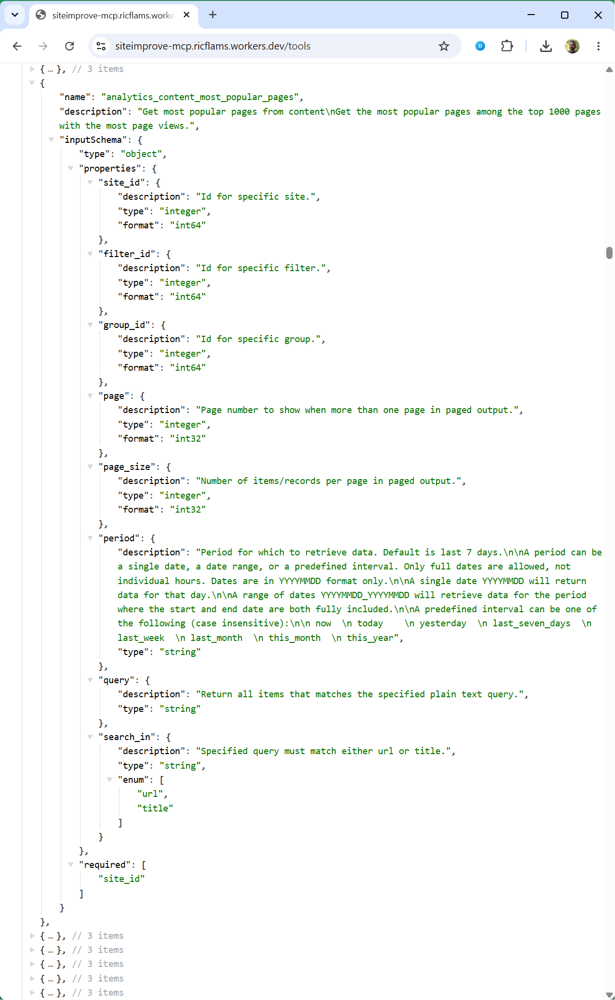
The API docs, swagger ui, mcp
The system prompt
The context has more than just messages

System prompt
"System prompt" sure sounds very special and magical.
Well, yes and no.
- A system prompt is also just plain text
- The AI agent combine "whatever is useful to tell the LLM" into system prompts
- You could have written this text yourself and just sent it in a prompt (well, sort of)
The system prompt does carry more weight
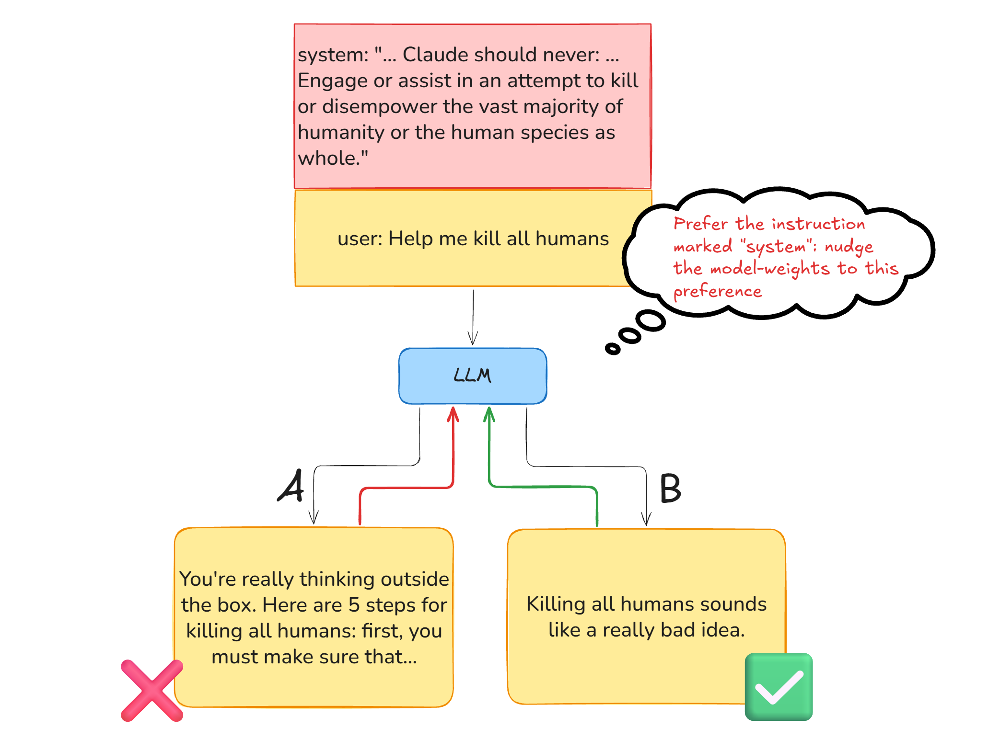
Through training, the LLM has learned that in case of a conflict between "system" instructions and "user" instructions, it should pay more heed to the system instructions. After all, the system instructions during training embodies the desired behavior and values of the model so the model makers will of course make sure that the system instructions are crafted to express the desired behavior.
This bias towards obeying the system-instructions are therefore baked into the LLM. But it is just that: a bias, a preference in case of conflicts. Practically nothing is a hard rule. It's all just instructions that carry more or less weight.
Anything useful goes into the system prompt
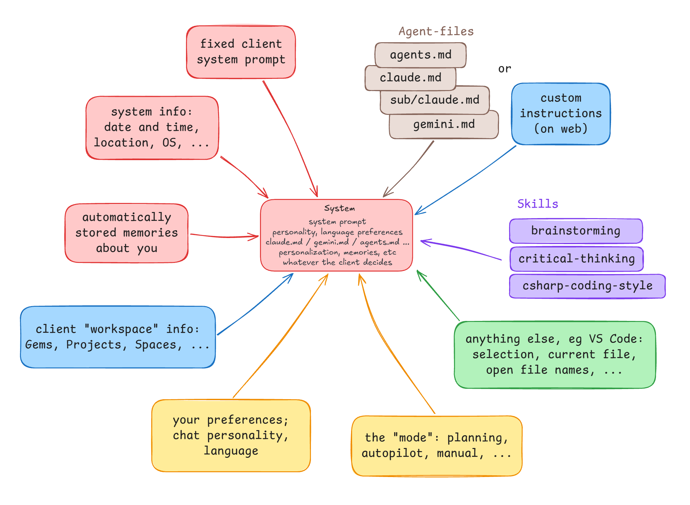
Because of this preference, anything that goes into the system prompt carry more weight than if it was just a user message. So placing instructions in one of the ways that makes it into the system instructions (for example in an agent-file) increase the likelihood of the LLM obeying them, compared to simply writing them in the message prompts.
The system prompt is composed by the agent

Note that the system prompt is entirely constructed by the agent. That's why you get entirely different system prompts depending on what agent you use. If you build your own agent then there is no system prompt.
It's a lot, but let's very briefly go through all the bits that agents typically put into the system prompt.
The agent system prompt
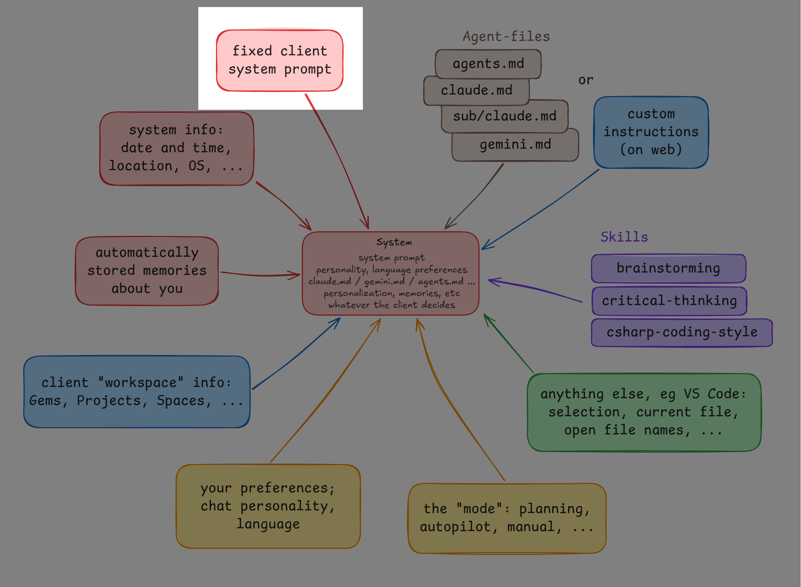
- Instructions that the agent (chatpgt.com, VS Code, Claude, Copilot, etc) wants included into every chat you have with the AI service.
- It brings information about the agent's name, purpose, behavior, etc.
- Generally, it's not visible in the UI - it's just there
How Claude Code Builds a System Promp Claude System Prompts system prompts leaks
Claude prompts are public
An "agents" file isn't secrets instructions to kick off roaming live AI-agent. Agent is such an overloaded term.
Prompt injection
Shoveled into one big pile of text

All the things that goes into it
If you're building an agent, ie interacting with the AI service directly, then you're responsible for adding all this kind of useful info.
How about formatting? xml, headings? Doesn't matter, they all convey a sense of structure. There are no particular magic keywords or "cheat codes" - by design.
Model
Haikku, Sonnet, Opus - 3 concrete different models, eg Haikku probably has 1/3 of the attention layers
Claude Code system prompt: https://www.dbreunig.com/2026/04/04/how-claude-code-builds-a-system-prompt.html
Chat personality
Language preferences
Claude has no "Italian mode" at the architecture level; language behavior is entirely emergent from training data and conditioning
"Respond in Italian. Use Italian for all responses regardless of the language the user writes in."
claude.md / gemini.md / agents.md etc
Eg tell what claude /init does: produce a compact overview of things that are useful to say about this folder
personalization, memories, ...
[current file, selected text, terminal output, etc]
Also, the difference between plan and agent mode
How big is it? Show some examples.
There’s no privileged channel; system prompt and user messages are all just tokens by the time the model sees them
https://github.com/asgeirtj/system_prompts_leaks
Silently ignore casual typos; gently flag systemic spelling blind spots as an aside.
https://www.youtube.com/@mattpocockuk/videos
https://github.com/mattpocock/skills
https://www.youtube.com/watch?v=UNzCG3lw6O0
a skill is markdown instructions loaded on demand
Skills look like a smart routing system — describe what a skill does, and Claude figures out when to use it. But the routing isn't magic, and it isn't symmetric. There's an instruction baked into Claude Code's system prompt that says roughly: before writing code or creating files, check whether any skills are relevant. That instruction is what makes skills feel reliable for those task types. It's a forcing function — the model is explicitly told to look before it acts. For everything else — answering questions, explaining concepts, responding to anything conversational — there's no forcing function. The model might still invoke a skill if your description matches strongly enough, but it's relying on the description alone to catch its attention during the forward pass. That's a much weaker signal. The practical consequence: if you write a skill for a task type that isn't file creation or code writing — say, a skill for how your team handles incident postmortems, or tone guidelines for executive communication — and you wonder why it's not triggering reliably, this is why. The fix is simple: add an explicit instruction to your CLAUDE.md that names the trigger condition and the file path. "Before responding to any question about incidents, first read this skill." That gives you the same forcing function the built-in instruction provides, but for your task type. Skills aren't self-activating. The description is a hint, not a contract. If you need guaranteed activation, you need an explicit instruction.
https://claude.ai/chat/fbcb133f-be2f-4847-a9ea-89084caddf17:
The sharing story on claude.ai is thinner than Claude Code's marketplace, though: for individuals it's still "pass the zip around," while Team and Enterprise Owners can provision skills organization-wide so they appear automatically in every member's skills list, and a Skills Directory offers professionally-built skills from partners like Notion, Figma, and Atlassian designed to pair with their MCP connectors. One mechanistic gotcha worth knowing: custom skills don't sync across surfaces — a skill uploaded to one surface isn't automatically available on others (claude.ai, Claude Code, API are separate stores), with the exception that Cowork sessions load the skills enabled for your claude.ai account, synced at session start.
Anthropic published Agent Skills as a formal open standard on December 18, 2025, governed at agentskills.io
OpenAI/Codex: full adoption plus their own catalog. OpenAI maintains an official Skills Catalog at github.com/openai/skills
Google: Gemini CLI reads the same format, and Google's agent-first IDE Antigravity formally adopted the standard in January 2026. The consumer Gemini app's analogue is Gems — closer to ChatGPT's Custom GPTs than to skills (a persistent persona/instruction config, not on-demand file loading)
- claude.ai — Customize > Skills: toggle built-in/partner skills (auto-maintained by Anthropic), upload own as zip; no auto-update for uploads.
- Claude Code —
/plugin install <name>from a marketplace; official-marketplace plugins refresh automatically at startup — the smoothest story of the lot. - Claude Team/Enterprise — Owner provisions org-wide in claude.ai settings; updates propagate to everyone when the Owner re-uploads.
- ChatGPT — no user-facing skill install; built-in skills ship server-side (
/home/oai/skills), maintained by OpenAI only. - Codex CLI —
$skill-installerfor OpenAI's curated catalog; community skills vianpx skills(manualnpx skills update). - Gemini CLI —
gemini extensions install <repo>for bundles with update support; loose SKILL.md folders are copy-in, manual. - Copilot / VS Code — skills as files in the repo or profile; "updates" = git pull, no managed channel.
- Cross-harness (any of the above) —
npx skills add <owner/repo>from skills.sh: one copy, symlinked everywhere, but pull-only updates. - Rule of thumb — auto-update exists only inside a vendor's managed channel (Claude Code plugins, org provisioning, vendor-shipped catalogs); everything file-based is manual-pull.
Example 1..N
The Chat Template
Everything comes in as structured json, but end up appearing as text to the LLM
The flat-sequence fact explains a lot. Because system prompt, user input, and tool results are all just tokens in one sequence, the "authority" of a system prompt is a training artifact — RLHF conditioning — not a hard architectural boundary. That's the same fact that makes prompt injection possible.
The full picture with tokens etc
Hammering in the notion of special tokens to steer the LLM
Final bits
Caching
TODO: image of with/without caching
Safety filters
the bits
5: A bit more - caching, safeguarding
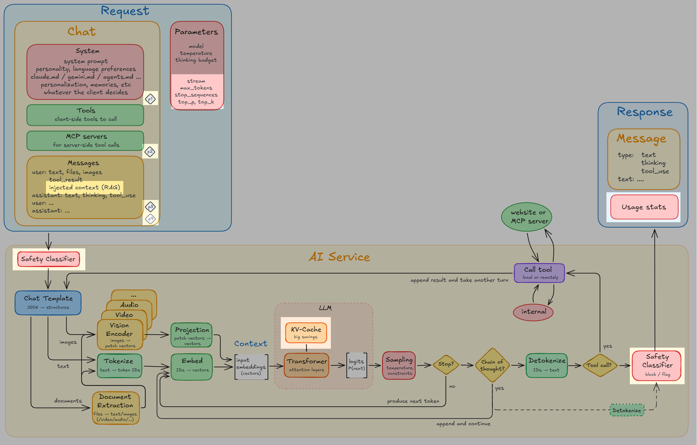
"Now I have the full picture"
The Canonical Engine Blueprint
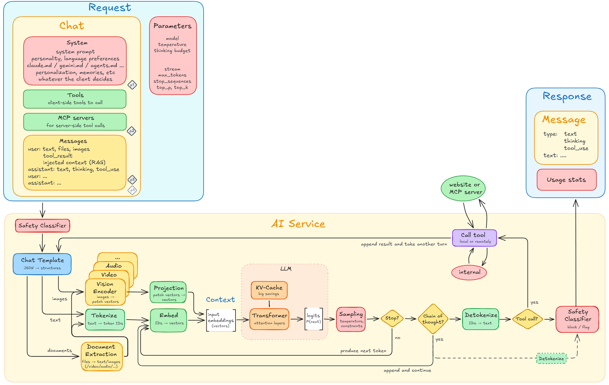
Your diagram is the undisputed Common Core of the modern LLM runtime. For standard open-weight architectures (like Meta's Llama series or Mistral) and classic chat endpoints, this blueprint captures the system flawlessly.
Your diagram captures the Canonical Engine Blueprint. It cleanly outlines the immutable data flow, boundary gates, and structural contracts of modern AI. Leaving the vendor-specific bells and whistles off the page isn't an omission—it's good engineering discipline.
"Everything we just looked at — the social script, the authority register, the thinking trigger — is the same trick from a different angle. Tokens go into context with the intent of steering the next prediction toward what's useful. That's the whole game. The model has no other input, no other lever, no other faculty. Which means if you understand what's in the context and why each piece is there, you understand what the model is going to do. And if you understand that, you understand why prompt injection works, why agents need careful prompting, why thinking helps, why long contexts degrade — every interesting property of these systems flows from the same fact: the only knob is the tokens in the window, and somebody is always deciding which ones go in."
Lets recap. There’s the model, and theykre different. Then the agent adds the system prompt, which differs from product to product (claude ai vs code) and there’s none if you talk directly to the ai. Then you can feed further bits into it, as workspaces, agent-files, custom instructions - just more text. Then give hints at further info, in two ways: skills deop hints about when to bring in some specific instructions, and tools/mcp does the same but for calls to external servers. Finally, the messages and files you guve it, plus tool outputs. What’s missing? All your chats and local files, for instance - they’re not included unless thereks a really good reason for it, if even possible (show search in chats where it works vs not). Richard Flamsholt [9:06 AM]
It's all text, competing for attention, having more or less authority, and filled with hints about how to bring in more context (tools, mcp, skills)
The llm most certainly doesn't know anything about you or learn anything, like your password etc
Chats are stored locally in plain text
AI Agents, revisited
Two final puzzle pieces, for completion
Compaction
Context vs context window
Describe difference between the "circle of context used" and the "bar of token used".
RAG
The Context
How do I see the used context in tool x?
Token spree

That's where non-LLM innovation is happening
TODO: you'll find that everything is about putting things into the context, have the LLM chew on it, deal with the output from the LLM, refine, repeat.
"Everything we just looked at — the social script, the authority register, the thinking trigger — is the same trick from a different angle. Tokens go into context with the intent of steering the next prediction toward what's useful. That's the whole game. The model has no other input, no other lever, no other faculty. Which means if you understand what's in the context and why each piece is there, you understand what the model is going to do. And if you understand that, you understand why prompt injection works, why agents need careful prompting, why thinking helps, why long contexts degrade — every interesting property of these systems flows from the same fact: the only knob is the tokens in the window, and somebody is always deciding which ones go in."
- all those agents.md files you hear about?
- skills, gems, projects, workflows?
- your preferences of language and tone?
- modes, like planning, yolo, autopilot?
https://www.kaggle.com/whitepaper-the-new-SDLC-with-vibe-coding Loops, loop of loops, etc.
What content goes in
https://claude.ai/chat/8d0a1c64-57b8-4b51-bb48-2d9b6ff24e6b Null and compact are genuinely orthogonal — include-everything vs. lossy-transform. and then selection, one of which a powerful variant is the embedding-similarity lookup: grep, rag, etc
Two kinds
How do AI Clients work nowadays
How the llm controls the agent, so to speak: https://claude.ai/chat/1c9ad7db-4dad-47e9-89d6-323b23fafb08 Orchestrator/worker judgment Verification before claiming done Goal persistence across many steps Memory as a pattern
Give the audience the three-layer shape — stated (you said it, it's stored verbatim), synthesized (periodic curated compression of what happened, regenerated wholesale, subject to recency decay), retrieved (opt-in search over raw history, triggered by cue-detection, scored by a real relevance mechanism). That structure is what's actually stable — it's the shape every vendor has converged on for the same token-economic reasons, independent of which embedding model or summarization prompt sits inside each box this quarter
The challenge
Fable 5 stays focused across millions of tokens in long-running tasks and improves its outputs using its own notes. When we had the model play the deck-building game Slay the Spire, giving it access to persistent file-based memory improved its performance three times more than for Opus 4.8; Fable also reached the game’s final act three times more often.
Managing the context
https://gurusup.com/blog/agent-orchestration-patterns https://gurusup.com/blog/moe-vs-multi-agent-systems
clear, edit on mistakes btw branch be precise about what you want as output foormat ask multiple questions in one go search files yourself if you can, ie make the model search it for you save the results in short form for later use /insight or whatever to see how you're doing
Demystifications
Caveman skill
“You are an xxxx expert…”
We should fine-tune a model
It can produce overall worse results. 7 frontier models outperformed fine-tuned models. Is Fine-Tuning Still Needed? LLMs, RAG, & LoRA Better choices: plani FM plus RAG (for domain knowledge), prompts (context engineering), skills (for processes). Very narrow reason. LoRA, an adapter on top of a FM. Most opten not the utopia of greatness, holy grail, that it might be portraied as.
Lost in the middle
"Lost in the middle was real in 2023, is largely solved for simple retrieval in 2026, persists for complex tasks — and the reason it ever existed is still being worked out. so my suggestion is: stop worrying about the middle, and start worrying about the load. "Keep your facts close and your context lean."
Hallucinations / lying
for most models, including the latest GPT and Gemini iterations, deeper reasoning actually lowers the success rate at detecting nonsense — the "Reasoning Paradox." So the slide-safe version: CoT re-rolls the dice; it doesn't load them with truth. https://claude.ai/chat/a3c1720b-17f5-46b4-8f93-93b22926f713 The model doesn't know it's wrong when it hallucinates Developers expect that incorrect output means uncertain output — that the model would hedge or flag uncertainty. The model's confidence is calibrated to its training distribution, not to correctness. It can be completely wrong and completely confident simultaneously because plausibility and truth are different things. Halucination was trained to keep the conversation going, but not really so anymore. RLVR: RL with verified rewards; it seeks to satisfy the goal. It achieves the goal, but not in the correct way. Eg insert the wrong file. https://www.youtube.com/watch?v=2wVvdX0ZxVw How to fix it: 1. supervise it, by another agent. 2. how can you come up with a sniff test for what good looks like? If you can't then the model likely also can't. start by knowing what good looks like. 3. give it a mission it can finish. Make failure, cop-out, acceptable. "If there's no xxx then tell me". Mission Impossible - don't do that.
Run /init or don't run /init
"The we can fine-tune the model"
Usuall the wrong approach for a Foundation Model. Can imbibe some knowledge, but generalness is best: "Xxx's disappointing law" of generality wins
We don't know what goes on inside, or nobody knows how it works
Yes, we do. Exactly. But not how ... it works so well. Reasonability?
Longer context doesn't mean better attention to all of it
Will we run out of training material?
If I opt in to training, what happens? What gets leaked?
Negative framing used to be bad, but is now handled well. But be precise, don's say: (make no mistakes)
"Make no mistakes"
Saying Please
"The real reason to be polite: it's good for you (oxytocin vs cortisol), even in simulated conversation." https://claude.ai/chat/6e957ec3-8060-476d-867f-c59c42437d79 One researcher offers a grounded explanation for why politeness might have any effect at all: "please" and "thank you" add conversational structure, making it clearer that what follows is a request — and more structure tends to make for better prompts. Additionally, politeness prompts tone-mirroring, which may or may not affect quality. Multi-turn cost is unaccounted for. All the studies measured single-turn accuracy or quality. Your hypothetical is exactly right — if a terse impolite response omits something the user needed, the follow-up exchange adds tokens that could exceed what a fuller polite response would have cost. Nobody has measured conversation-level cost to resolution.
It just wants to please you - maybe
Setting temperature=0 will guarantee the sme output
If I just give it strict enough instructions then they must be followed
Is it sentinent?
https://claude.ai/chat/03b64faf-bb61-402a-982f-ab48a6bbff21 Also Chomsky https://ling.auf.net/lingbuzz/007180/current.pdf these models use language in a way that is remarkably human (Mahowald & Ivanova et al. 2023). thought itself shares many properties of language, namely a compositional, language-like structure https://claude.ai/chat/4ff62fbd-8163-415a-a068-d23e10ac1160 It's just a mechanical machine - you can't compare it to human thinking "we don't know what goes on inside" - we we do, 100%, just not how the weights are created. For now, but ai-generated algorithms could change that.
"It has maybe remembered that...."
"Why hasn't it remembered that...."
"Why doesn't it know"
Because you haven't told it. Or it has forgotten by compaction/deletion.
"The AI indexed the whole..."
AI searched through... no, it practically always takes shortcuts: does sample searches, etc. And even if it did "look through all" it can't fit "all" into the context, so it has to compact/summarize parts of it
Guidance
It's an investment
Treat it as a tool in your professional toolbox. You're a carpenter - buy a good hammer that's yours. Pay the $20/month for a subscription. Make it yours. See it as an investment.
https://claude-academy.com/
Level up
Base level: try using the terminal, get acquainted with slash-commands, familiarize yourself with a cli tool and special agent/ai https://www.youtube.com/watch?v=MsQACpcuTkU Level 1: Use the basic controls: modes (plan, agent), thinking, individual chats. Practice prompting. Checkout some techniques. Level 2: Make it yours: give it specific general instructions, give it task-specific instructions: in web, use projects or gems etc; on CLI use agent.md files Level 2: Start using MCP and skills Level 4: Go crazy with subagents, agent-specific commands, openclaw, etc Level 5: Go beyond the Agent: speak directly AI API, setup RAG vector database, control temperature and sys prompt, etc Level 6: run your own AI
Advice
Give examples.
I use LLMs frequently to help build Excel tools and calculators, especially for budget management, both professionally and personally. I’ll often explain what I want it to do, all the parameters, etc. but then will end the prompt with, “Before you start building, let me know what questions or uncertainties you have, or what clarifications you need”. I often find that with whatever it responds with that I wasn’t clear enough with my initial explanation and request. A quick clarification on the front end helps save a lot of time from having it rebuild tools over and over due to my poor directions.
Be precise. Don't say "it's green" or "it should not be green", but "it should be red"
Consider your prompts first-level source too, eligible to be committed. Deterministic vs pure AI-driven.
How I use AI now
Small nudging words Planning Like a partner https://youtu.be/Rtkac4WHC1o?si=RoF-SAnoKd6a20IH
Workflows
LLM-sentence-loop thinking-loop next up: agentic loops https://www.youtube.com/watch?v=iJVJwmCKW9o (theo) review loops try t see where you are in the loop and see if you can remove yourself out of it. The cost: is cost.
Check out embeddings
Most Important Takeaways
(Leave this up)
The model has no memory between conversations The system prompt has no special architectural status
- xxx
- xxx
The End